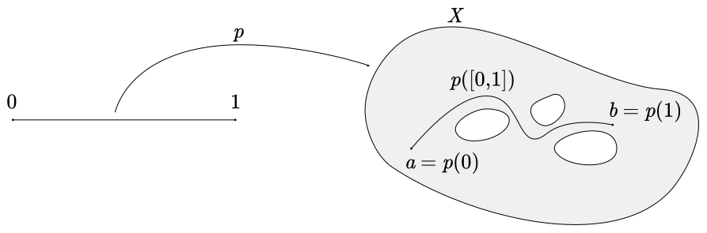
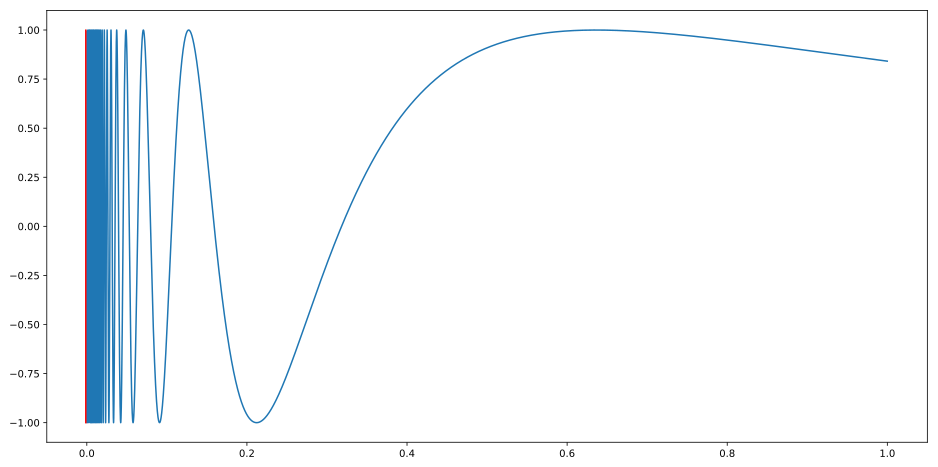

Path Connectedness
Some Useful Tools
I defined connectedness in an earlier post, but there's actually a completely different route we could have taken to define it. Recall that a space is connected if it cannot be separated by disjoint neighborhoods. In this post we'll explore an alternative approach to defining connectedness of topological space, called path connectedness.
But before we do so, we actually need another fact about connectedness. (Recall that $\overline B$ denotes the closure of the set $B$.)
Theorem. Let $X$ denote a topological space with a connected subsset $A\subseteq X$. If the subset $B\subseteq X$ satisfies $A\subseteq B\subseteq \overline{A}$, then $B$ is connected.
Proof. We give a proof by contradiction. Suppose $B$ is not connected. Then there exist open sets $U,V\subseteq B$ which separate $B$. Since $A$ is a connected subset of $B$, this means that either $A\subseteq U$ or $A\subseteq V$. Assume without loss of generality that $A\subseteq U$. Then $A\cap V=\varnothing$ because $U\cap V = \varnothing$. Note, however, that $B\cap V\ne\varnothing$. Thus, we may choose $x\in B\cap V$. Certainly $x\in B$ and so it follows that $x\in\overline{A}$ because $B\subseteq\overline{A}$. On the other hand, we have $x\in V$, which is open in $X$ and disjoint from $B$, so $x\notin\overline{A}$. This is a contradiction, since it cannot be that both $x\in\overline{A}$ and $x\notin\overline{A}$.
What the above theorem really says is that adding limit points to a connected set always results in another connected set. This result will be invaluable to us throughout this post and in the future. Here is just one example of its usefulness:
Corollary. All types of intervals in $\mathbb{R}$ (open, half-open and closed) are connected.
Proof. We've shown previously that open intervals are connected. Therefore, the rest are as well since they can be obtained from open intervals by adding limit points.
Of particular interest to us is the connectedness of the closed unit interval $[0, 1]$.
The following invaluable lemma allows us to determine when a piecewise function constructed from continuous maps is continuous.
Gluing Lemma. Let $X$ and $Y$ denote topological spaces with closed subsets $U,V\subseteq X$ for which $X=U\cup V$. If $f_1:U\to Y$ and $f_2:V\to Y$ are continuous functions which agree on their intersection, i.e. $f_1\restriction{U\cap V}=f_2\restriction{U\cap V}$, then there exists a unique continuous function $f:X\to Y$ with $f\restriction{U}=f_1$ and $f\restriction{V}=f_2$.
Proof. Showing that such a function is unique is fairly straightforward. We simply define $f:X\to Y$ by
$$f(x) =
\begin{cases}
f_1(x) & \text{if } x\in U, \\
f_2(x) & \text{if } x\in V.
\end{cases}$$This function is clearly well defined because $f_1$ and $f_2$ agree on their intersection.
We will argue next that $f$ is continuous by demonstrating that the preimage of any open set in $Y$ is open in $X$. To this end, suppose $W\subseteq Y$ is open. Then
$$\begin{align}
f^{-1}[W] &= X \cap f^{-1}[W] \\
&= (U \cup V) \cap f^{-1}[W] \\
&= (U \cap f^{-1}[W]) \cup (V \cap f^{-1}[W]) \\
&= (U \cap f_1^{-1}[W]) \cup (V \cap f_2^{-1}[W]) \\
&= f_1^{-1}[W] \cup f_2^{-1}[W].
\end{align}$$Since $f_1$ and $f_2$ are continuous, certainly $f_1^{-1}[W]$ and $f_2^{-1}[W]$ are open in $U$ and $V$, respectively. Thus $f^{-1}[W]$ is open in $U\cup V = X$ since it is the union of open sets. It follows that $f$ is continuous, as desired.
Path Connected Spaces
We can now work toward defining path connectedness. But first we need to define what a path is! The definition may look a bit ominous at first, but it's really just a formal way of saying exactly what you'd expect.
Definition. Let $X$ denote a topological space with points $a,b\in X$. A path in $X$ from $a$ to $b$ is a continuous map $p:[0,1]\to X$ for which $p(0)=a$ and $p(1)=b$.
It is implicitly understood in such cases that $[0,1]$ is to be viewed as a subspace of $\R$ in the standard topology.
Basically a path is just a continuous map from the unit interval into the space of interest. Some authors use the word to describe both a path $p$ and its image $p([0,1])\subseteq X$, but I will keep the concepts separate. That is to say, a path is not the set of points that its image traces out in the codomain. Its image is a useful way to visualize it, however. And of course, since $[0,1]$ is a connected set, so is its image because paths are continuous! This means that the image of a path looks like a connected curve.

Now we can think about a different type of "connectedness." Intuitively, if a space is "connected" you should be able to draw a path between any two points in the space. Otherwise, if there are points in the space that cannot be connected by a path, it is "disconnected."
But we've already used these words for a different concept, so we need to make up new ones.
Definition. A topological space $X$ is path connected if for any pair of points $a,b\in X$ there is a path $p:[0,1]\to X$ from $a$ to $b$.
You may be wondering whether path connectedness and connectedness are actually one and the same. After all, it's hard to visualize a space that is connected in one sense but not the other. It turns out that one direction is easy.
Theorem. Every path connected topological space is connected.
Proof. We give a proof by contradiction. Suppose a space $X$ is path connected but not connected. Then there exists a separation of $X$ by nonempty disjoint open sets $U,V\subseteq X$. Choose points $u\in U$ and $v\in V$. Since $X$ is path connected, there exists a path $p:[0,1]\to X$ with $p(0)=u$ and $p(1)=v$. Define $U'=U\cap p([0,1])$ and $V'=V\cap p([0,1])$. We will show that $U'$ and $V'$ form a separation of $p([0,1])$.
First, we note that $u\in U'$ because $u\in U$ and $p(0)=u$ so $u\in p([0,1])$. Similarly, $v\in V'$ because $v\in V$ and $p(1)=v$ so $v\in p([0,1])$. Thus, $U'$ and $V'$ are nonempty. Next, clearly
$$\begin{align}
U' \cup V' &= \big(U \cap p([0, 1])\big) \cup \big(V \cap p([0, 1])\big) \\
&= (U \cup V) \cap p([0,1]) \\
&= X \cap p([0,1]) \\
&= p([0,1]).
\end{align}$$A similar computation yields
$$\begin{align}
U' \cap V' &= \big(U \cap p([0, 1])\big) \cap \big(V \cap p([0, 1])\big) \\
&= (U \cap V) \cap p([0,1]) \\
&= \varnothing \cap p([0,1]) \\
&= \varnothing.
\end{align}$$Finally, $U'$ and $V'$ are both open in the subspace topology on $p([0,1])$ because they are intersections of $p([0,1])$ with open sets in $X$ ($U$ and $V$, respectively). It follows that $U'$ and $V'$ separate $p([0,1])$ and so it is disconnected. However, it is the continuous image of the connected set $[0,1]$, so this is a contradiction.
So path connectedness implies connectedness. But as we shall see later on, the converse does not necessarily hold. So the two notions are actually different. It takes more to be a path connected space than a connected one!
As with any topological concept, we want to show that path connectedness is preserved by continuous maps.
Theorem. If $f:X\to Y$ is a continuous function and $X$ is path connected, then $f[X]\subseteq Y$ is also path connected.
Proof. Choose points $a,b\in f[X]$ and pick $a'\in f^{-1}[\{a\}]$ and $b'\in f^{-1}[\{b\}]$. Since $X$ is path connected, there exists some path $p:[0,1]\to X$ from $a'$ to $b'$. We argue that $f\circ p:[0,1]\to Y$ is a path in $Y$ from $a$ to $b$.
Certainly $f\circ p$ is continuous since it is the composition of continuous maps. Furthermore,
$$\begin{align}
(f\circ p)(0) &= f(p(0)) \\
&= f(a') \\
&= a,
\end{align}$$and
$$\begin{align}
(f\circ p)(1) &= f(p(1)) \\
&= f(b') \\
&= b.
\end{align}$$Thus $f\circ p$ is a path from $a$ to $b$, completing the proof.
We saw earlier that disconnected spaces could be decomposed into maximal connected subsets. There is also a way of doing this for path disconnected spaces as well.
Theorem. Let $X$ denote a topological space and define a relation $\sim$ on $X$ as follows: $a\sim b$ if and only if there exists a path in $X$ from $a$ to $b$. Then $\sim$ is an equivalence relation.
Proof. We first show reflexivity. For any point $a\in X$, the constant map $p:[0,1]\to X$ given by $p(t)=a$ is certainly a path from $a$ to itself, so $a\sim a$.
Next we show symmetry. If $a\sim b$ then there exists a path $p:[0,1]\to X$ with $p(0)=a$ and $p(1)=b$. Define $p^{-}:[0,1]\to X$ by $p^{-}(t)=p(1-t)$. We may think of $p^{-}$ as tracing out $p$ in reverse. That $p^{-}$ is well defined follows because $1-t\in [0,1]$ whenever $t\in [0,1]$, so the images of $p$ and $p^{-}$ are actually equal. Next, $p^{-}$ is continuous since it is the composition of the continuous functions $p$ and $1-t$. Finally, $p^{-}(0)=p(1)=b$ and $p^{-}(1)=p(0)=a$, so $p^{-}$ is a path from $b$ to $a$. Thus, $b\sim a$.
Lastly, we show transitivity. If $a\sim b$ and $b\sim c$ then there exist paths $p_1:[0,1]\to X$ with $p_1(0)=a$ and $p_1(1)=b$ and $p_2:[0,1]\to X$ with $p_2(0)=b$ and $p_2(1)=c$. Define $p:[0,1]\to X$ by
$$p(t) =
\begin{cases}
p_1(2t) & \text{if } t\in [0,\frac{1}{2}], \\
p_2(2t-1) & \text{if } t\in [\frac{1}{2},1].
\end{cases}$$We may think of $p$ as a path which traces out $p_1$ and then $p_2$ at twice the original speed. That $p$ is well defined follows from the fact that $p_1(1)=p_2(0)=b$. By the gluing lemma, this also implies that $p$ is continuous. Furthermore, $p(0)=p_1(0)=a$ and $p(1)=p_2(1)=c$, so $p$ is a path from $a$ to $c$. Thus, $a\sim c$, completing the proof.
The above result gives us our maximal path-connected subsets:
Definition. The path components of a topological space are the equivalence classes of the relation $\sim$ defined above.
A Path-ological Example
(I wonder how many topology professors have made that pun with regard to the example I give below? Probably hundreds.)
I mentioned above that connected spaces are not always path connected. In this section I will give an example of such a space, although the proof that this is the case is not exactly trivial. First, we will need the following result about sequences and limit points.
Definition. A sequence $\{x_n\}_{n\in\N}$ in a topological space $X$ is eventually constant if there exists $x \in X$ and $N \in \N$ for which $x_n=x$ whenever $n>N$.
Note that any eventually constant sequence trivially converges to the point $x$ in the above definition.
Lemma. Let $X$ denote a topological space and let $A$ be a subset of $X$. If there exists a sequence $\{p_n\}_{n\in\N}$ of points in $A$ that converges to $p\in X$ and which is not eventually constant, then $p$ is a limit point of $A$.
Proof. Choose any neighborhood $U$ of $p$. Since $\{p_n\}_{n\in\N}$ converges to $p$, there exists $N_1\in\N$ for which $p_n\in U$ whenever $n>N$. Since $\{p_n\}_{n\in\N}$ is not eventually constant, there exists $N_2\in N$ for which $p_n\neq p$ whenever $n>N_2$. Choose $N=\max\{N_1,N_2\}$. For every $n>N$, we have that $p_n\in U$ and $p_n\ne p$. By definition, it follows that $p$ is a limit point of $A$.
We are now ready to give an example of a space that is connected but not path connected. Warning: it's pretty gross.
Example (The Topologist's Sine Curve). Define
$$\begin{align}
A &= \Big\{\Big(x,\sin\big(\tfrac{1}{x}\big)\Big)\in\R^2\mid x\in (0,1)\Big\}, \\
B &= \Big\{(0,y)\in\R^2\mid y\in [-1,1]\Big\}.
\end{align}$$$A$ is a sort of sine curve which oscillates more and more rapidly as you approach the origin from the right, and which does not include its endpoints. $B$ is just a vertical line. The topologist's sine curve is their union, $X=A\cup B$.

The blue curve in the above graph is the set $A$ and the red curve (which may be too narrow on your display to see clearly) is the $B$. The line $B$ is sort of the natural completion of $A$, in the sense that $A$ never touches is but really looks like it ought to. More formally, every point of $B$ is a limit point of $A$.
To show this, choose a point $(0,y)\in B$. Certainly $y=\sin\theta$ for some $\theta\in [0,2\pi)$, and thus $y=\sin(\theta+2\pi n)$ for every $n\in \N$. If $x_n=\frac{1}{\theta+2\pi n}$ then $y=\sin\big(\tfrac{1}{x_n}\big)$ for every $n\in \N$. Furthermore, it is clear that $\lim_{n\to\infty}x_n = 0$. Thus,
$$\lim_{x_n\to 0}\Big(x_n,\sin\big(\tfrac{1}{x_n}\big)\Big) = (0,y).$$
Since the sequence $\{x_n\}_{n\in\N}$ is not eventually constant, every point $y\in B$ is a limit point of $A$. Since $A$ is connected (it is the continuous image of $(0,1)$), it follows from the lemma at the beginning of this post that the topologist's sine curve $X$ is connected, since it can be obtained from a connected set plus by adding limit points.
Showing that $X$ is not path connected is a bit trickier. We will proceed by contradiction, supposing that there exists a path $p:[0,1]\to X$ with $p(0)=(0,0)\in B$ and $p(1)\in A$. Since $B$ is closed in $\R^2$, it follows from the continuity of $p$ that $p^{-1}[B]$ is closed in $[0,1]$. Thus, $p^{-1}[B]$ contains a largest element, which we shall denote by $b$. This implies that $p\restriction{[b,1]}:[b,1]\to X$ is continuous with $p\restriction{[b,1]}(b)\in B$. and $p\restriction{[b,1]}(t)\in X-B = A$ for every $t>b$.
We define $p':[0,1]\to X$ by $p'(t)=p\big((1-b)t+b\big)$. Clearly $p'(0)=p(b)$ and $p'(1)=p(1)$. Also, $p'$ is continuous since it is the composition of continuous functions. Thus, $p'$ is a path in $X$ from $p(b)$ to $p(1)$ with $p'([0,1])=p([b,1])$. Furthermore, $p'(0)\in B$ while $p'(t)\in A$ for every $t\in (0,1]$.
Now, for any $t\in [0,1]$ we can write $p'(t)=\big(x(t),y(t)\big)$ in terms of its components $x:[0,1]\to [0,1]$ and $y:[0,1]\to [-1,1]$. Clearly both $x$ and $y$ are continuous. Observe that $x(0)=0$ while $x(t)\in (0,1]$ whenever $t\in (0,1]$. In addition, $y(0)=0$ while $y(t)=\sin\big(\frac{1}{x(t)}\big)$ for any $t\in (0,1]$. Choose $n\in\N$ and $u\in\Big(0,x\big(\frac{1}{n}\big)\Big)$ for which $\sin\big(\frac{1}{u}\big)=(-1)^n$. From the intermediate value theorem, there exists $t_n\in\big(0,\frac{1}{n}\big)$ for which $x(t_n)=u$. Since $\lim_{n\to\infty}\frac{1}{n}=0$ and $0<t_n<\frac{1}{n}$ for every $n\in\N$, clearly $\lim_{n\to\infty}t_n=0$. However, $y(t_n)=\sin\big(\frac{1}{x(t_n)}\big)=\sin\big(\frac{1}{u_n}\big)=(-1)^n$, which does not converge. This contradicts the continuity of $y$.
There are a few other well known examples of spaces like the above that are connected but not path connected. The most prominent is the topologist's whirlpool, which is essentially just the polar form of the topologist's sine curve.
One might wonder if there is a sufficient additional criterion for a connected space to be path connected? The answer is yes. If a space is connected and locally path connected then it is path connected. However, I will not define local path connectedness or prove this result, since I do not really care about it and it is not useful to us.